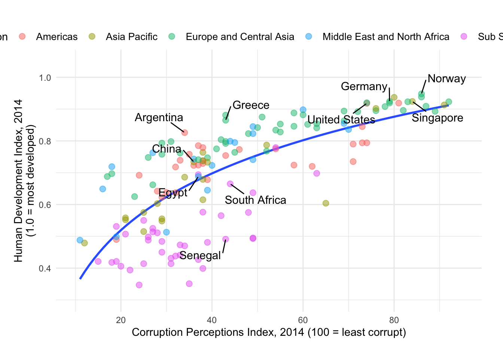
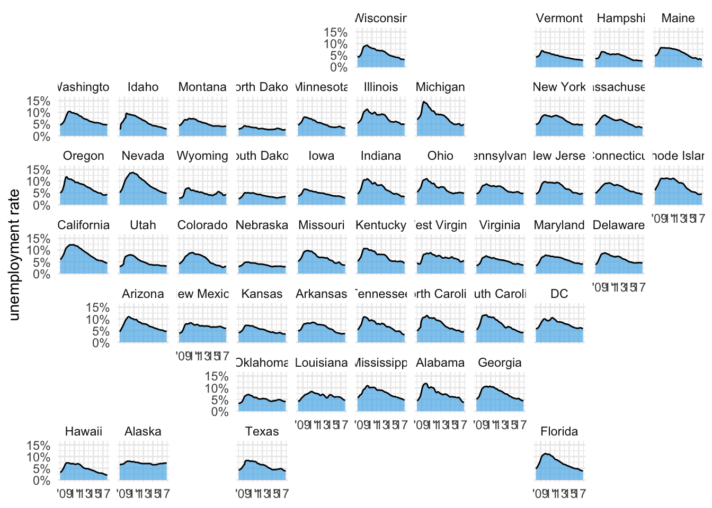
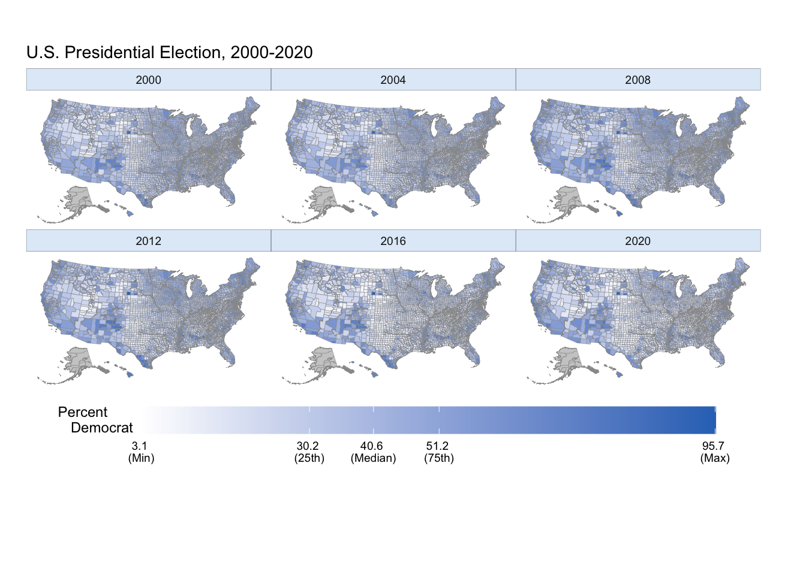

ggplot# install.packages("geofacet")
library(tidyverse)
library(socviz)
library(lubridate)
library(geofacet)
library(ggthemes)
library(ggrepel)
theme_set(theme_minimal())hdi_corruption <- read_csv(
'https://bcdanl.github.io/data/hdi_corruption.csv')
# Use geom_smooth(method = lm, formula = "y ~ log(x)", se = F) .
# `box.padding` option would be useful for geom_text_repel().
country_highlight <- c("Germany", "Norway", "United States",
"Greece", "Singapore",
"Argentina", "Senegal",
"China", "Egypt", "South Africa")
corruption <- hdi_corruption %>%
mutate(label = ifelse(country %in% country_highlight, country, NA))
ggplot(data = filter(corruption, year == 2014), aes(cpi, hdi)) +
geom_smooth(method = lm, formula = "y ~ log(x)", se = F) +
geom_point(
aes(color = region, fill = region),
size = 2.5, alpha = 0.5, shape = 21
) +
geom_text_repel(
aes(label = label), color = "black", size = 4,
box.padding = .75
) +
scale_y_continuous(
limits = c(0.3, 1.05), breaks = c(0.2, 0.4, 0.6, 0.8, 1.0),
name = "Human Development Index, 2014\n(1.0 = most developed)"
) +
scale_x_continuous(
limits = c(10, 95),
breaks = c(20, 40, 60, 80, 100),
name = "Corruption Perceptions Index, 2014 (100 = least corrupt)"
) +
theme_minimal() +
theme(
plot.margin = unit( c(1.75, .75, .75, .5), "cm"),
legend.position = c(.5, 1.05),
legend.direction = "horizontal",
legend.text = element_text(size = 10)
) +
labs( color = "Region", fill = "Region") 
unemp_house_prices <- read_csv(
'https://bcdanl.github.io/data/unemp_house_prices.csv')
# Use geofacet::facet_geo().
# The figure is faceted by `state`.
adjust_labels <- as_labeller(
function(x) {
case_when(
x == "New Hampshire" ~ "N. Hampshire",
x == "District of Columbia" ~ "DC",
TRUE ~ x
)
}
)
unemp_house_prices %>%
filter(
date >= ymd("2008-01-01")
) %>%
ggplot(aes(date, unemploy_perc)) +
geom_area(fill = "#56B4E9", alpha = 0.7) +
geom_line() +
scale_y_continuous(
name = "unemployment rate",
limits = c(0, 16),
breaks = c(0, 5, 10, 15),
labels = c("0%", "5%", "10%", "15%")
) +
scale_x_date(
name = NULL,
breaks = ymd(c("2009-01-01", "2011-01-01",
"2013-01-01", "2015-01-01", "2017-01-01")),
labels = c("'09", "'11", "'13", "'15", "'17")
) +
facet_geo(~state, labeller = adjust_labels) +
theme(
strip.text = element_text(
margin = margin(3, 3, 3, 3)
),
axis.line.x = element_blank()
)
election_panel <- read_csv(
'https://bcdanl.github.io/data/election_panel.csv')
# Use `county_map` data from the `socviz` package.
# Do not use coord_map().
election_panel_AK <- filter(election_panel,
state_po == "AK")
class(county_map$id)## [1] "character"county_map <- county_map
county_map$id <- as.integer(county_map$id)
election_panel$id <- as.integer(election_panel$id)
county_map_AK <- filter(county_map,
id >=2000, id < 3000)
# county_data <- left_join(county_data, election_panel, by = "id")
# county_data <- county_data %>%
# select(-(pop_dens:flipped))
county_full <- left_join(county_map, election_panel, by = "id")
county_full_AK <- filter(county_full,
id >=2000, id < 3000)
county_full <- county_full %>%
arrange(year, county_fips, order)
# us_states <- map_data("state")
na_map <- function(yr){
county_full_na <- filter(county_full, is.na(year)) %>%
select(-year) %>%
mutate( year = yr)
}
county_full_NAmap <- county_full
for (val in as.numeric(levels(factor(county_full$year)))){
county_full_NAmap <- rbind(county_full_NAmap, na_map(val))
}
p1 <- ggplot() + geom_polygon(data = filter(county_full_NAmap, !is.na(year)),
mapping = aes(x = long, y = lat, group = group,
fill = pct_DEMOCRAT ),
color = "grey60", size = 0.1)
p2 <- p1 + scale_fill_gradient(
# low = '#CB454A', # from party_colors for GOP
low = '#FFFFFF', # transparent white
high = '#2E74C0', # from party_colors for DEM
na.value = "grey80",
# midpoint = quantile(county_full$pct_DEMOCRAT, .5, na.rm = T),
breaks = c(quantile(county_full$pct_DEMOCRAT, 0, na.rm = T),
quantile(county_full$pct_DEMOCRAT, .25, na.rm = T),
quantile(county_full$pct_DEMOCRAT, .5, na.rm = T),
quantile(county_full$pct_DEMOCRAT, .75, na.rm = T),
quantile(county_full$pct_DEMOCRAT, 1, na.rm = T)),
labels = c(paste(round(quantile(county_full$pct_DEMOCRAT, 0, na.rm = T), 1),"\n(Min)"),
paste(round(quantile(county_full$pct_DEMOCRAT, .25, na.rm = T), 1),"\n(25th)"),
paste(round(quantile(county_full$pct_DEMOCRAT, .5, na.rm = T), 1),"\n(Median)"),
paste(round(quantile(county_full$pct_DEMOCRAT, .75, na.rm = T), 1),"\n(75th)"),
paste(round(quantile(county_full$pct_DEMOCRAT, 1, na.rm = T), 1),"\n(Max)")
),
guide = "colourbar"
)
p2 + labs(fill = "Percent\nDemocrat",
title = "U.S. Presidential Election, 2000-2020") +
theme_map() +
facet_wrap(.~ year) +
theme(plot.margin = unit( c(1, 1, 4, 0.5), "cm"),
legend.position = c(0.5, -.15),
legend.justification = c(.5,.5),
strip.background = element_rect(fill = "#e1ecf8",
colour = "black", size = .1)
) +
guides(fill = guide_colourbar(direction = "horizontal", barwidth = 25,
title.hjust = -1, title.vjust = 1))
References for this homework are